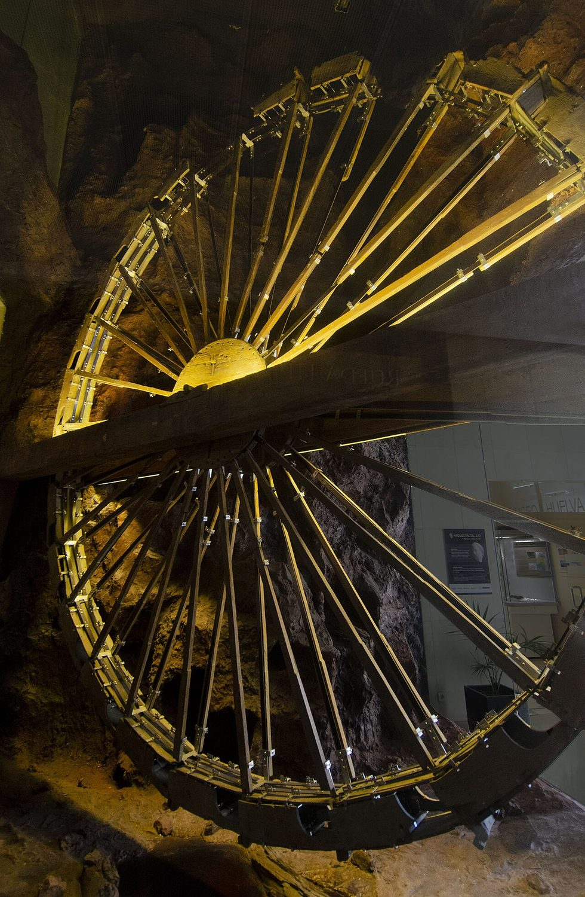
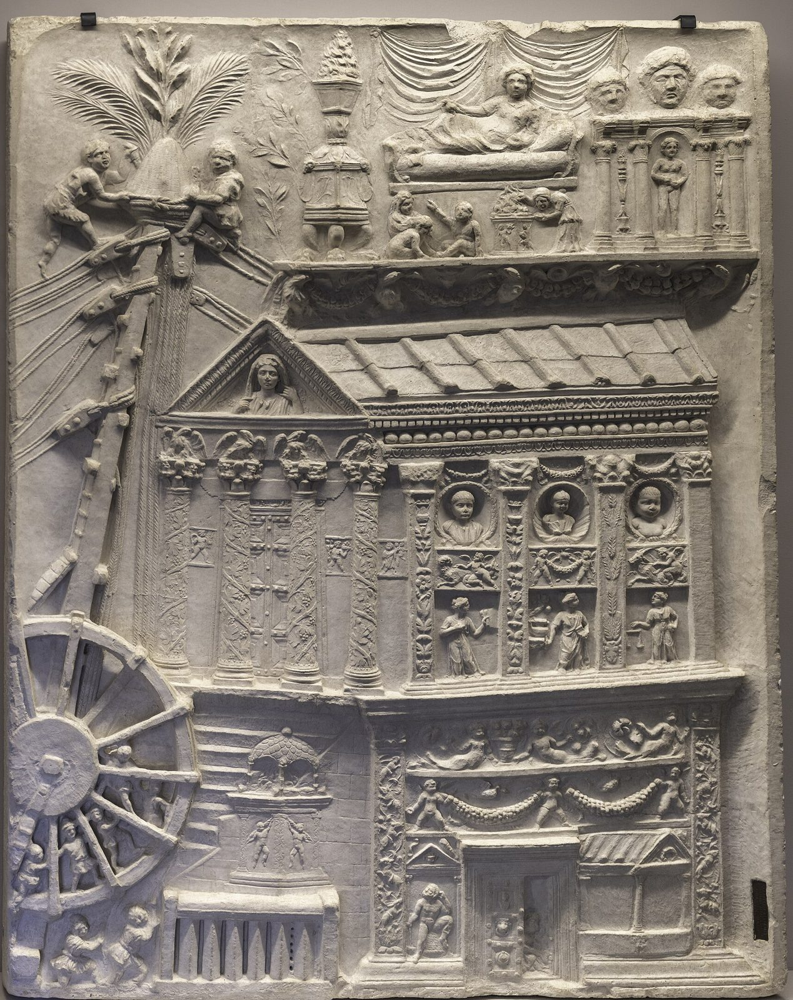

Unit 6 · Slavery in ancient Rome · Lesson 5
From mines to the household: the work of enslaved people
An enslaved miner, a farm worker, a builder and a household attendant all lived under the same law. What do our sources show about the work each one did, and whose words are they?
Year 11 Ancient History · Present with → or space · Read on a phone with R

Review · books closed · 6 minutes · press K for the timer
Five questions from Lessons 1–4, and one sentence to fix
- What range does Scheidel (2011) give for Italy’s enslaved population at its peak, and how sure is he? Between 1 and 1.5 million, some 15–25 per cent of the population, from a model that, he says, ‘entails huge margins of error’ (2011, p. 289): an estimate, not a count.
- What is a verna, and why does it matter? An enslaved person born in the owner’s household. As a rule a child followed its mother’s status (Gaius, Institutes 1.82), so slavery could renew itself without war.
- What does Columella say he gave to the mothers of many children? Exemption from work for a mother of three sons; freedom as well for a mother of more (On Agriculture 1.8.19). It is his own account (‘I have granted’): we do not know how often others did the same.
- Name the staff of Cato’s model olive-yard. An overseer, a housekeeper, 5 labourers, 3 teamsters, 1 muleteer, 1 swineherd and 1 shepherd: ‘a total of 13 persons’ (Cato 10.1). It is a model list, not one real farm.
- Where was Delos, and what did Strabo claim about it? An island in the Aegean and a great market for enslaved people. Strabo says it ‘could both admit and send away ten thousand slaves on the same day’ (14.5.2): a claim about capacity, not a count of sales.
- Writing · fix this sentence: “Italy had three million slaves.” Four faults: no owner, no year, no hedge, and ‘slaves’ outside a quotation. For example: Brunt (1971), as Bradley (1989) reports him, calculated that about three million of Italy’s seven and a half million people were enslaved at the end of the 1st century BCE, whereas Scheidel (2011) estimates perhaps 15–25 per cent: both are estimates, not counts.
Mark your own answers in a different colour. Which question did you find hardest?
Learning intentions and success criteria · 2 minutes
Today’s goals
- analyse the range of work done by enslaved people
- write a thesis that makes an arguable judgement and previews the argument
- describe work in mines, farms, towns and households, with evidence
- explain how the kind of work shaped an enslaved person’s life
- write a thesis someone could disagree with that names my reasons
Syllabus outcomes: AH-11-02 proposes ideas about the varying causes and effects of events and developments · AH-11-03 explains the role and significance of forces, features, events, individuals and groups in shaping the past · AH-11-07 communicates historical understanding, applying historical knowledge, terms and concepts. Life Skills: AH-LS-05 describes features of places or societies in the ancient world · AH-LS-11 communicates information about the past using historical terms and concepts.
Note-making · the routine for the whole course
How to structure your notes
questions and key terms, written after
short phrases, arrows (→ leads to), abbreviations (c. = about; ref. = reference)
- 1A new pageA cue column about a quarter of the page wide; title and date at the top; room for a summary at the bottom.
- 2Listen and look, then writePhrases, not sentences. Today: every source with its writer, and whose voice it is.
- 3Write your own notes at the ✎ checkpointThen compare with the model notes, one row at a time. Add what you missed in a second colour.
- 4Write the cue questions afterwardsUse exam verbs: describe, explain. To revise, cover your notes and answer the cues.
- 5Finish with a three-sentence summaryOne checkpoint today: what the grid shows. The work-and-experience grid in your booklet is your notes for the stations.
Key vocabulary · add to the unit word wall
Words for talking about work and evidence
| From the unit list | Meaning |
|---|---|
| Explain (NESA) | NESA, Glossary of key words: ‘Relate cause and effect. Make the relationships between things evident. Provide why and/or how.’ Department advice: show how and why, and which reason mattered most. |
| Arguable thesis | A judgement someone could disagree with, which names its main reasons. |
| Vilicus / vilica | The enslaved overseer and housekeeper of a farm. |
| Familia | A Roman household, including the enslaved people in it. |
| Enslaved person / slave | ‘Enslaved person’ (the syllabus’s term) keeps the person in view; ‘slave’ is used when quoting sources and in established terms (‘slave wars’). |
| Added today | Meaning |
|---|---|
| Voice (of a source) | Whose view a source gives: an owner, an outsider, or an enslaved person (or their fellow-enslaved). |
| Skilled work | Work that took training, such as building or silversmithing; training, Bodel says, ‘raised the value of a slave’. |
| ‘Chain-gang’ | Hooper and Ash’s translation of the workers Cato lists as kept in chains (Cato 56). |
| Columbarium | A Roman burial chamber with rows of niches for urns, where whole households, free, freed and enslaved, were commemorated. |
1 · We do — station rotation in pairs · 1 minute to set up, then 3 minutes a station
Four stations, one grid: complete the work-and-experience grid in your booklet
- 1Start at your stationMines, farms, towns or households. Pairs read the sources together.
- 2Fill in that rowWork · evidence · conditions · chance of freedom. Short phrases only.
- 3Evidence means a writerName the source, who wrote it, and what kind of text it is.
- 4Rotate at the timerThree minutes a station (press K, then click 3). If a source says nothing about freedom, write “not mentioned”.
| Station | Work | Evidence (who wrote it?) | Conditions | Chance of freedom |
|---|---|---|---|---|
| 1 · Mines | ||||
| 2 · Farms | ||||
| 3 · Towns | ||||
| 4 · Households |
1 · We do · Station 1 of 4 · mines · 3 minutes · fill in the Mines row
Station 1 · Mines: Diodorus on the silver mines of Spain
For they purchase a multitude of slaves whom they turn over to the overseers of the working of the mines; and these men, opening shafts in a number of places and digging deep into the ground, seek out the seams of earth which are rich in silver and gold …
Diodorus of Sicily, Library of History 5.36.4, written about 60–30 BCE, on the silver mines of Spain (‘Iberia’), where, he says, Italians had ‘swarmed’ after Rome took Spain · trans. C. H. Oldfather (Loeb, 1939)
… the slaves who are engaged in the working of them produce for their masters revenues in sums defying belief, but they themselves wear out their bodies both by day and by night in the diggings under the earth, dying in large numbers because of the exceptional hardships they endure. For no respite or pause is granted them in their labours, but compelled beneath blows of the overseers to endure the severity of their plight …
Diodorus of Sicily, Library of History 5.38.1 · trans. C. H. Oldfather (Loeb, 1939)
- What work does Diodorus describe?
- What conditions does he report? Whose voice is this: an owner’s, an outsider’s, or a miner’s?
- What does he say about any chance of freedom?
Early finisher: what would you need to see to be surer?
1 · We do · Station 2 of 4 · farms · 3 minutes · fill in the Farms row
Station 2 · Farms: Cato’s lists and Columella’s reward
This is the proper equipment for an oliveyard of 240 iugera: An overseer, a housekeeper, 5 labourers, 3 teamsters, 1 muleteer, 1 swineherd, 1 shepherd — a total of 13 persons;
Cato, On Agriculture 10.1, about 160 BCE: a handbook for estate owners in Campania and Latium. A list of what a farm should have, not a record of one farm · trans. W. D. Hooper and H. B. Ash (Loeb, 1934)
The chain-gang should have a ration of four pounds of bread through the winter, increasing to five when they begin to work the vines, and dropping back to four when the figs ripen.
Cato, On Agriculture 56, same translation. ‘Chain-gang’: the translators’ word for the workers Cato lists as kept in chains
For to a mother of three sons exemption from work was granted; to a mother of more her freedom as well.
Columella, On Agriculture 1.8.19, about 60–65 CE: an owner describing his own practice · trans. H. B. Ash (Loeb, 1941)
- What work, and what ranks of workers, do the sources show?
- What conditions are reported? Whose voice is this?
- What chance of freedom is mentioned, and for whom?
Early finisher: why might an owner write a list like Cato’s?
1 · We do · Station 3 of 4 · towns · 3 minutes · fill in the Towns row
Station 3 · Towns: skilled work in Rome
… he proceeded to buy slaves who were architects and builders. Then, when he had over five hundred of these, he would buy houses that were afire, and houses which adjoined those that were afire, and these their owners would let go at a trifling price … so many and so capable were the slaves he possessed, — readers, amanuenses, silversmiths, stewards, table-servants; and he himself directed their education …
Plutarch, Life of Crassus 2.4–6, probably early 2nd century CE, on Marcus Crassus (died 53 BCE) · trans. B. Perrin (Loeb, 1916). Amanuenses: secretaries who wrote what their owner dictated
Epitaphs set up by slaves for each other, such as that dedicated to ‘Hilarus, goldsmith’ and depicting the tools of his craft (balance, compass, engraving tool) commissioned by a burial society (collegium) of fellow-slaves from the house of a senator’s daughter …
John Bodel (2011), p. 318, describing an inscription from Rome (CIL 6.9149) · Cambridge World History of Slavery, vol. 1

- What work, and what skills, do the sources show?
- What conditions? Whose voice is each source?
- What chance of freedom is mentioned?
1 · We do · Station 4 of 4 · households · 3 minutes · fill in the Households row
Station 4 · Households: sixteen assistants and a freedman
… the entourage of Musicus Scurranus comprised two cooks, two chamberlains, two slaves in charge of silver, two attendants, three secretaries, a buying agent, a treasurer, a doctor, a slave in charge of wardrobe, and a woman (the only one in the group), Secunda, who is listed last and without any job title.
John Bodel (2011), p. 322, on CIL 6.5197, set up at Rome by the sixteen enslaved assistants of Musicus Scurranus, an enslaved financial official of the emperor Tiberius (reigned 14–37 CE)
… the ill state of health of my freedman Zosimus … He is honest and well-educated; but his profession, his certified accomplishment, one might say, is that of comedian, wherein he highly excels … he reads history, oratory, and poetry, as well as if he had singly applied himself to that art.
Pliny the Younger, Letters 5.19, to Valerius Paulinus, written for publication in the late 1st or early 2nd century CE · trans. W. Melmoth, rev. W. M. L. Hutchinson (Loeb, 1915)
- What work, and what skills, do the sources show?
- What conditions are reported? Whose voice is each source?
- What chance of freedom is mentioned, and for whom?
Early finisher: why is Secunda ‘listed last and without any job title’? Is there one answer?
2 · I do — check your grid, one row at a time · 2 minutes · correct in a second colour
The work-and-experience grid: what the four stations show
| Station | Work | Evidence (who wrote it?) | Conditions | Chance of freedom |
|---|---|---|---|---|
| Mines | Digging shafts deep underground for seams of silver and gold, under overseers | Diodorus (about 60–30 BCE), a Greek outsider reporting on Spain | ‘no respite or pause’; ‘compelled beneath blows of the overseers’; ‘dying in large numbers’ | None mentioned. (Added: Bradley, 2011, enslaved miners ‘probably the smallest chance’) |
| Farms | Field labour, working the vines, teaming, herding; an overseer and a housekeeper over the labourers | Cato (about 160 BCE) and Columella (about 60–65 CE): owners advising owners, with models, not records | Rations set by season: the chain-gang’s bread rises from four to five pounds at vine work | Cato: none; Columella says mothers of three sons were exempt from work, of more, freed |
| Towns | Skilled building and crafts: architects, builders, silversmiths, a goldsmith | Plutarch (probably early 2nd century CE), an outsider; a goldsmith’s epitaph set up by fellow enslaved people | Costly, trained property: Crassus ‘directed their education’. (Added: Bodel, 2011, training ‘raised the value of a slave’) | Plutarch: none mentioned; Hilarus was commemorated by ‘fellow-slaves’ |
| Households | Cooks, secretaries, a doctor, a buying agent; a reader and comic actor | An epitaph set up by sixteen enslaved assistants (Bodel); Pliny’s letter (late 1st or early 2nd century CE), an owner’s voice | Near the owner, who knows his skills and his health well. (Added: Bodel, 2011, household staff on call ‘at all hours of the night and day’) | Zosimus is Pliny’s ‘freedman’. (Added: Bradley, 2011, valued household staff ‘perhaps stood the best chance’) |
2 · I do — think aloud · 2 minutes · what varies, and how well do we know it?
Reading across the grid: what varies, and whose voice is it?
- 1WorkWhat did the person do all day: dig, plough, build, cook, write, perform?
- 2PlaceWho was watching, and how near was the owner: overseers underground, a farm with an overseer, a workshop, a house?
- 3SkillHow costly was the person to buy or train? Crassus ‘directed their education’; training ‘raised the value of a slave’ (Bodel).
- 4VoiceWhose words are these? Literary sources, Bodel says, ‘almost without exception’ ‘represent the circumstances of the upper classes’; of today’s sources, only the epitaphs were set up by enslaved people themselves.
Which row of the grid rests on the weakest evidence, and why?
Probably the mines. Diodorus is one outsider, drawing on earlier writers, and no miner speaks. The farms rest on owners’ models; the towns on a biographer writing long after Crassus and one epitaph that a historian describes; the households on an owner’s letter and an epitaph set up by the assistants themselves, and even then ‘only 10 per cent of all epitaphs from Rome’ name a job (Bodel, 2011, p. 322). Each row therefore needs a hedge.
Notes checkpoint · I do · 2 minutes · cue: describe, with evidence
The work, and whose voice we hear
3 · You do · Writing focus · 8 minutes · I do → We do → apply
Writing focus: a thesis someone could disagree with, that names its reasons
Two tests for a thesis: Could someone disagree? · Does it name the reasons?
Three theses · written for this lesson · on a different question: why did Crassus buy enslaved builders?
1 Crassus bought over five hundred enslaved builders and architects.
2 Crassus bought enslaved builders because he wanted to make money.
3 Although Plutarch’s story may be coloured by his view of Crassus’s greed, Crassus probably bought enslaved builders mainly to profit from Rome’s fires, because he bought burning houses ‘at a trifling price’ and built no house for himself beyond the one he lived in.
1 fails both tests: it only reports what Plutarch says, so there is nothing to argue, and it gives no reason
2 is arguable, and names a reason, but one only: no hedge, no sign of the evidence
3 · a concession: it names the strongest objection first
3 · a hedge and a degree: ‘probably … mainly’
3 · two reasons the paragraphs can test
Turn this fact into a thesis that answers the question and previews two reasons: “Many enslaved people worked in the Spanish silver mines.” Question: Why did Italian investors buy enslaved miners in such numbers?
Check it: could someone disagree? · two reasons? · a hedge? · a concession?
Although Diodorus is an outsider who draws on earlier writers, Italian investors probably bought enslaved miners in such numbers mainly because the mines paid ‘revenues in sums defying belief’, and because miners driven with ‘no respite or pause’ were ‘dying in large numbers’ and had to be replaced.
Write a two-sentence thesis. Sentence 1: your judgement, a degree or hedge and your main reasons (try “Although …, … largely … because … and …”). Sentence 2: the limit of the evidence, or the qualification you will keep. Your Writing toolkit (booklet pages 3–4): the modality scale.
3 · You do · 17 minutes · check first · then write · press K for the timer
Explain how the work enslaved people did shaped their lives.
Check first: what does this question ask you to do?
- Verb
- explain: NESA, Glossary of key words, ‘Relate cause and effect. Make the relationships between things evident. Provide why and/or how.’ Department advice: say which reason mattered most
- Topic
- how the kind of work, and where it was done, shaped what life was like for enslaved people
- Limits
- Rome, about 200 BCE – 200 CE; the work and the evidence you have met; what the sources can and cannot show
- Do
- a two-sentence thesis someone could disagree with, which names your reasons; then the topic sentence and first reason, with evidence, of your first paragraph
Write two opposing theses, one that the work decided most and one that legal status as property decided most, and judge which the evidence better supports.
- Thesis (two sentences): sentence 1 gives your judgement, a degree or hedge and your main reasons (begin with a concession if you can); sentence 2 gives the limit of the evidence, or the qualification your argument will keep.
- Topic sentence of body paragraph 1: it answers the question and picks up your first reason.
- First reason with evidence from your grid: the source, its writer, and a hedge.
Frame for the thesis only: “Although …, … largely … because … and …” Word bank:
3 · You do · self-check · 3 minutes
Check your thesis
Swap with a partner. Say: “I could disagree because …”. Can they answer you?
A fact (“Many enslaved people worked in mines”): nobody can disagree. A list of kinds of work, with no judgement. A verdict with no reasons (“Work mattered a lot”). A degree that changes between the thesis and the body paragraph.
Finish your notes If time · or at home
Summary: three sentences
- What work did enslaved people do, and in which places?
- Whose voices do our sources carry, and what follows for the evidence?
- What makes a thesis arguable?
Enslaved people dug silver in the mines of Spain (Diodorus 5.36–38), worked and supervised on farms (Cato 10, 11, 56), built and made things in towns (Plutarch, Crassus 2.4–6) and served in households such as Scurranus’s sixteen assistants and Pliny’s freedman Zosimus. Most of our sources are the words of owners or outsiders (Diodorus, Cato, Plutarch, Pliny), and only epitaphs such as Scurranus’s carry the assistants’ own voice, so every row of the grid needs a hedge. A thesis is arguable when someone could disagree with it and it names the reasons that would let a reader test it.
Check · sticky notes · 5 minutes · post, read three, name what makes one arguable
Where does your thesis sit on the line?
- 1WriteThe judgement part of your thesis on a sticky note (one sentence).
- 2PostPut it where its degree sits on the line, and keep your own reasons in your book.
- 3ListenThree are read aloud. Ask of each: could someone disagree? does it name its reasons?
What makes a thesis arguable?
Someone could disagree with it. It names its reasons, so a reader knows what you will prove. Its degree or hedge is matched to the evidence. A concession can show you know the best objection.
Exit ticket · 3 minutes · before you leave
Your thesis
Write your thesis for today’s question, in two sentences. Check it has a judgement someone could disagree with, a degree or hedge, and your main reasons.
a judgement someone could disagree with, not a fact or a list · a degree or hedge matched to the evidence (largely, probably, mainly) · at least two named reasons · for the strongest answers, a concession (‘Although …’) that names the best objection · ‘enslaved people’ outside quotations.
Then check yourself against today’s three “I can” statements. Next lesson: property and person: the legal status of enslaved people.
Practice and review · 1 of 3 · true, false, justify
True or false? Justify your answer
- 1Diodorus was a miner who described his own work. False — he was a Greek historian writing about 60–30 BCE, who drew on many earlier writers; no miner speaks in the extract.
- 2Cato’s list of thirteen persons records the staff of a real olive farm. False — it is ‘the proper equipment’ for an oliveyard: a model list from a handbook for owners.
- 3Cato cuts the chain-gang’s bread ration in winter. False — he gives four pounds of bread through the winter, ‘increasing to five when they begin to work the vines’; nothing is reduced.
- 4Plutarch says Crassus owned over five hundred enslaved architects and builders. True — Crassus 2.4: ‘over five hundred of these’. It is Plutarch’s claim, made more than 150 years after Crassus’s death, not a count.
- 5Pliny’s letter about Zosimus shows how every Roman owner treated the people he owned. False — it is one owner, writing for publication and presenting his own kindness; Zosimus is already his freedman.
- 6The sixteen assistants of Musicus Scurranus all had the same job. False — cooks, chamberlains, secretaries, a doctor, a buying agent and more; Secunda is ‘listed last and without any job title’ (Bodel, 2011).
Practice and review · 2 of 3 · writing
Test the theses, then fix one
Question: why did Pliny describe Zosimus’s talents at such length in Letters 5.19?
- “Pliny describes the talents of his freedman Zosimus in a letter to Valerius Paulinus.”
- “Pliny describes Zosimus’s talents at length because he wanted Valerius Paulinus to help him.”
- “Although Pliny’s affection for Zosimus may be real, he probably listed his talents so fully mainly to persuade Valerius Paulinus to shelter him, because the letter asks him to take Zosimus into his farm, and because Pliny opens by showing how kindly he treats his household.”
1 fails both tests: a fact, with no reason. 2 is arguable and names one reason, but has no hedge and no sign of the evidence. 3 passes both: a concession, a hedge and a degree, and two reasons the paragraphs can test against the letter.
“Plutarch tells the story of Crassus’s builders.” Make it an arguable thesis that answers: why does Plutarch tell this story? Name two reasons.
Although the details of the story may be accurate, Plutarch probably tells it mainly to illustrate Crassus’s avarice, because he introduces it as one of ‘the chief proofs of his avarice’ and because he says Crassus made ‘the public calamities his greatest source of revenue’.
Practice and review · 3 of 3 · cover your notes and answer from memory
Quick checks
- Describe the work of enslaved people in a Spanish mine, with a source. Digging shafts deep underground for seams of silver and gold, under overseers, for investors who ‘swarmed’ to Spain (Diodorus, 5.36–38, writing about 60–30 BCE).
- What does Cato 56 give the chain-gang, and what does Cato’s list at 10.1 show? A ration of four pounds of bread through the winter, five once vine work begins: nothing is reduced. The list is a model staff of 13 persons: an overseer, a housekeeper and labourers, herders and teamsters.
- Why is Plutarch’s story of Crassus’s builders a claim, not a count? He wrote more than 150 years later, as a moralist who reports that the Romans saw avarice as Crassus’s ‘sole vice’; ‘over five hundred’ is his figure.
- Whose voices do today’s sources carry, and which are the enslaved people’s own? Mostly owners and outsiders: Cato, Columella, Pliny, Diodorus, Plutarch. Epitaphs such as Scurranus’s, set up by his sixteen assistants, and Hilarus’s, set up by fellow enslaved people, are the enslaved people’s own.
- What two questions test a thesis, and what else makes it strong? Could someone disagree? Does it name the reasons? Strong theses add a degree or hedge matched to the evidence, and often a concession (‘Although …’).
- What did Bradley (2011) say about the chances of freedom, and how sure was he? That household staff in valued roles ‘perhaps stood the best chance’ and rural and mining workers ‘probably the smallest chance’: hedged, because ‘the rate of manumission is unknown’.
Sources and credits
Where everything comes from
Diodorus of Sicily, Library of History 5.36–38: trans. C. H. Oldfather (Loeb, vol. III, 1939, public domain), LacusCurtius. Cato, On Agriculture 10.1 and 56: trans. W. D. Hooper and H. B. Ash (Loeb, 1934, public domain), LacusCurtius. Columella, On Agriculture 1.8.19: trans. H. B. Ash (Loeb, vol. I, 1941, public domain), LacusCurtius. Plutarch, Life of Crassus 2: trans. B. Perrin (Loeb, vol. III, 1916, public domain), LacusCurtius. Pliny the Younger, Letters 5.19: trans. W. Melmoth, rev. W. M. L. Hutchinson (Loeb, vol. I, 1915, public domain), archive.org. Strabo, Geography 14.5.2: trans. H. L. Jones (Loeb, vol. VI, 1929, public domain), LacusCurtius.
Modern historians, quoted briefly: J. Bodel, “Slave labour and Roman society” (pp. 311–36); K. Bradley, “Slavery in the Roman Republic” (pp. 241–64); N. Morley, “Slavery under the Principate” (pp. 265–86); and W. Scheidel, “The Roman slave supply” (pp. 287–310), all in K. Bradley and P. Cartledge (eds), The Cambridge World History of Slavery, vol. 1 (Cambridge University Press, 2011); K. R. Bradley, Slavery and Rebellion in the Roman World (Indiana University Press, 1989), p. 146, reporting K. Hopkins (1978) and P. A. Brunt (1971). Vatican Museums, “Mausoleum of the Haterii” (the crane relief); Wikipedia, “Diodorus Siculus”, “Parallel Lives” and “Tomb of the Haterii” (dates and background). The NESA Glossary of key words (definitions quoted word for word).
Outcomes and content: NSW Education Standards Authority (NESA), Ancient History 11–12 Syllabus (2024). © NESA.
- A restored Roman-period wooden water-lifting wheel from the Riotinto mines, Spain, found in 1928 (Museo de Huelva) · Photo: Ángel M. Felicísimo · CC BY 2.0 · source
- The crane relief from the Tomb of the Haterii, a family of builders, Rome, early 2nd century CE (Vatican Museums) · Photo: Wilfredor · CC0 1.0 · source
.jpg){kind=link}

All images are public domain or openly licensed, and were resized or cropped for the web. Each is shared under the licence shown.